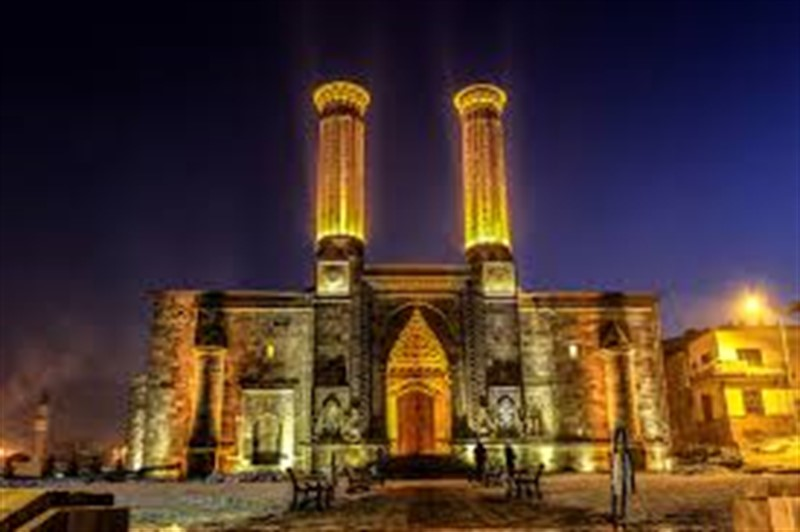

|
ERZURUMUN GÖZDESİ CİFTE MİNARELİ MEDRESE 
Erzurum'un sembollerinden biri olan Çifte Minareli Medrese'nin bir kitabesi olmadığı için, yapılış tarihine ilişkin elimizde net bir bilgi bulunmamaktadır. Selçuklu Sultanı Alaaddin Keykubat'ın kızı olan Hundi Hatun veya İlhanlı hanedanlarından Padişah Hatun tarafından yaptırılmış olma ihtimalinden dolayı "Hatuniye Medresesi" de denilmektedir. Genel kanı, 13. yüzyılın sonlarında yaptırıldığı şeklindedir. Osmanlı padişahlarından IV. Murat'ın emri ile bir süre tophane olarak, daha sonra da kışla olarak kullanılmıştır. 1932'de Sipahi Ocağı'na tahsis edilerek yurt olarak hizmet vermiştir. 1942-1967 yılları arasında Erzurum Müzesi olarak kullanıldığını görüyoruz. Günümüzde ise hem müze hem de resim sergi salonu olarak hizmet vermektedir. Yaklaşık 35x46 metre boyutlarında iki katlı, dört eyvanlı ve açık medreseler grubunun en önemli örneği olan medresenin zemin katında 19, birinci katta ise 18 odası bulunmaktadır. Avlu 26x10 metre ölçülerinde dört yönden revaklarla çevrilidir. Girişin batısındaki kare şekilli mekan mescid olarak kullanılmıştır. Zemin katın revakları kalın sütunlar üzerine otururken, sütunların çoğu silindirik, diğerleri ise sekizgen gövdeye sahiptir. Medrese odaları beşik tonozla örtülüdür. Medresenin yapılışına ilişkin iki farklı rivayet bulunmaktadır. Bir tanesinde; Çifte Minareli Medrese'yi kızı için yaptırtan Selçuklu Sultanı I. Alaeddin Keykubat'ın, savaşa gidip şehit olması üzerine, paralarını alamayan ustaların işi yarım bıraktıkları anlatılır. Daha çok bilinen ve oldukça trajik olan ikinci rivayet ise usta çırak ilişkisinin hazin öyküsüdür. Şöyle ki; inşa edilen bina yükseldikçe çırak, ustasından daha zanaatkar olduğunu göstermeye başlamış. Bu durumu ne kadar kıskansa da usta bir şey diyemiyormuş. Bir gün çalışırlarken, çırak ustasından su istemiş. Bunu duyan usta "Usta idim oldum şegirt (çırak), al destiyi suya seğirt" diyerek kendisini minareden aşağıya atmış. Hatasını fark eden çırak çok pişman olmuş ve ustasının arkasından o da kendini minareden aşağıya atmış. Çalışan işçiler bu olaya çok üzülmüşler ve işi yarım bırakarak gitmişler. İkinci rivayeti destekleyen birtakım işçilik farkları bu tarihi yapıda göze çarpmaktadır. Çifte Minareli Medrese'nin sağ yarısı çırak, sol yarısı ise usta tarafından yapılmıştır. Sağ yarısındaki sütunlar, duvar kenarları ve diğer detaylar daha işlemeli ve gösterişli iken, sol yarısı sadedir. Günümüzde devam etmekte olan tadilat çalışmaları, Evliya Çelebi'nin şu sözlerini doğrular niteliktedir: "Bu cam termin edilse küre-i arzda misali bulunmaz bir eser olur. Allah tamirini müyesser eylese". Erzurum Çifte Minareli Medrese'yi üç değişik zamanda ziyaret etmeye teşebbüs etsek de devam eden tadilat çalışmalarından dolayı iç kesimlerini görme fırsatı bulamadık. |
|---|